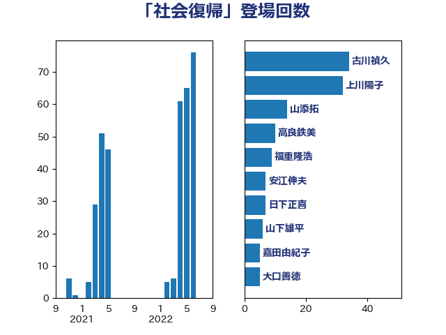

単語「社会復帰」

| 古川禎久 | 自由民主党 | 34 回 |
| 上川陽子 | 自由民主党 | 32 回 |
| 山添拓 | 日本共産党 | 14 回 |
| 高良鉄美 | 無所属 | 10 回 |
| 福重隆浩 | 公明党 | 9 回 |
| 安江伸夫 | 公明党 | 7 回 |
| 日下正喜 | 公明党 | 7 回 |
| 山下雄平 | 自由民主党 | 6 回 |
| 嘉田由紀子 | 無所属 | 5 回 |
| 大口善徳 | 公明党 | 5 回 |
| 清水貴之 | 日本維新の会 | 4 回 |
| 秋野公造 | 公明党 | 4 回 |
| 谷川とむ | 自由民主党 | 4 回 |
| 伊藤孝江 | 公明党 | 3 回 |
| 保岡宏武 | 自由民主党 | 3 回 |
| 尾崎正直 | 自由民主党 | 3 回 |
| 川合孝典 | 国民民主党 | 3 回 |
| 鈴木義弘 | 国民民主党 | 3 回 |
| 中谷一馬 | 立憲民主党 | 2 回 |
| 斉藤鉄夫 | 公明党 | 2 回 |
| 本村伸子 | 日本共産党 | 2 回 |
| 清水真人 | 自由民主党 | 2 回 |
| 熊田裕通 | 自由民主党 | 2 回 |
| 磯崎仁彦 | 自由民主党 | 2 回 |
| 竹内真二 | 公明党 | 2 回 |
| 菅義偉 | 自由民主党 | 2 回 |
| 阿部弘樹 | 日本維新の会 | 2 回 |
| 高木かおり | 日本維新の会 | 2 回 |
| 中曽根康隆 | 自由民主党 | 1 回 |
| 串田誠一 | 日本維新の会 | 1 回 |
| 井出庸生 | 自由民主党 | 1 回 |
| 佐々木さやか | 公明党 | 1 回 |
| 北側一雄 | 公明党 | 1 回 |
| 吉田宣弘 | 公明党 | 1 回 |
| 山田賢司 | 自由民主党 | 1 回 |
| 平木大作 | 公明党 | 1 回 |
| 平沼正二郎 | 自由民主党 | 1 回 |
| 有村治子 | 自由民主党 | 1 回 |
| 東徹 | 日本維新の会 | 1 回 |
| 津島淳 | 自由民主党 | 1 回 |
| 田所嘉徳 | 自由民主党 | 1 回 |
| 田村まみ | 国民民主党 | 1 回 |
| 田村憲久 | 自由民主党 | 1 回 |
| 田畑裕明 | 自由民主党 | 1 回 |
| 稲富修二 | 立憲民主党 | 1 回 |